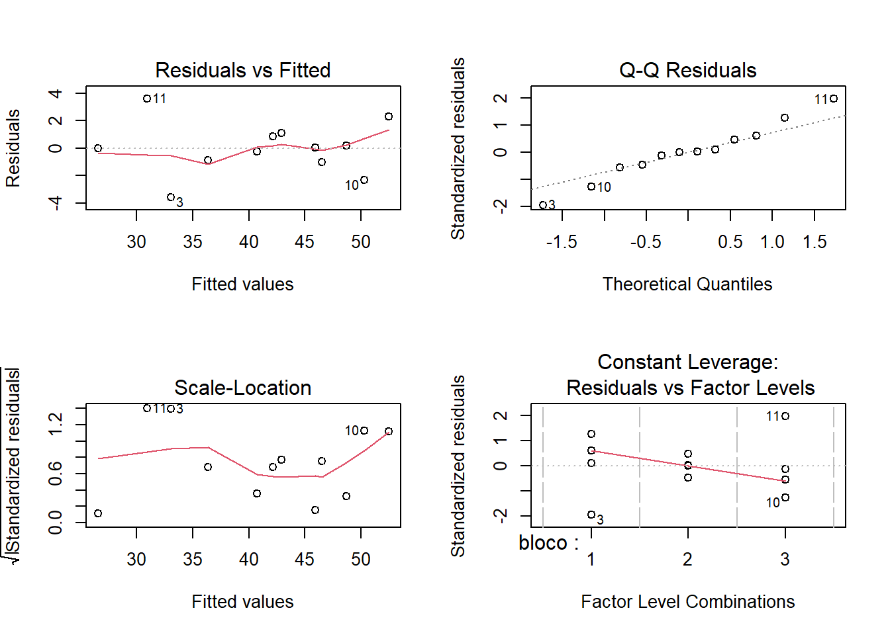

plan <- expand.grid(x1 = c(-1,1),
x2 = c(-1,1))
plan <- rbind(plan,plan,plan)
plan$bloco <- as.factor(c(rep(1,4),rep(2,4),rep(3,4)))Blocagem no fatorial 2^k
Blocagem na replicação no fatorial 2^k
fatorial 2^2 com b=3 blocos
Planejamento.
Adicionado resposta.
plan$y <- c(44, 54.8, 29.5, 48.9, # bloco 1 (operador 1)
35.5, 46, 26.5, 43, # bloco 2 (operador 2)
40.5, 48, 34.5, 45.5) # bloco 3 (operador 3)
plan x1 x2 bloco y
1 -1 -1 1 44.0
2 1 -1 1 54.8
3 -1 1 1 29.5
4 1 1 1 48.9
5 -1 -1 2 35.5
6 1 -1 2 46.0
7 -1 1 2 26.5
8 1 1 2 43.0
9 -1 -1 3 40.5
10 1 -1 3 48.0
11 -1 1 3 34.5
12 1 1 3 45.5Análise com bloco.
lm1 <- lm(y ~ x1*x2 + bloco, plan)
summary(lm1)
Call:
lm(formula = y ~ x1 * x2 + bloco, data = plan)
Residuals:
Min 1Q Median 3Q Max
-3.5750 -0.9021 0.0083 0.9042 3.6000
Coefficients:
Estimate Std. Error t value Pr(>|t|)
(Intercept) 44.3000 1.2948 34.214 4.15e-08 ***
x1 6.3083 0.7475 8.439 0.000151 ***
x2 -3.4083 0.7475 -4.559 0.003853 **
bloco2 -6.5500 1.8311 -3.577 0.011684 *
bloco3 -2.1750 1.8311 -1.188 0.279792
x1:x2 1.5083 0.7475 2.018 0.090184 .
---
Signif. codes: 0 '***' 0.001 '**' 0.01 '*' 0.05 '.' 0.1 ' ' 1
Residual standard error: 2.59 on 6 degrees of freedom
Multiple R-squared: 0.948, Adjusted R-squared: 0.9046
F-statistic: 21.87 on 5 and 6 DF, p-value: 0.0008701Planejamento e análise via pacote FrF2
Carregando pacote.
library(FrF2)Planejamento e resposta.
plan2 <- FrF2(nruns = 4,
nfactors = 2,
replications = 3,
factor.names = c("x1", "x2"),
randomize = F)
plan2$y <- c(44, 54.8, 29.5, 48.9, # bloco 1 (operador 1)
35.5, 46, 26.5, 43, # bloco 2 (operador 2)
40.5, 48, 34.5, 45.5) # bloco 3 (operador 3)
summary(plan2)Call:
FrF2(nruns = 4, nfactors = 2, replications = 3, factor.names = c("x1",
"x2"), randomize = F)
Experimental design of type full factorial
4 runs
each run independently conducted 3 times
Factor settings:
x1 x2
1 -1 -1
2 1 1
The design itself:
run.no run.no.std.rp x1 x2 Blocks y
1 1 1.1 -1 -1 .1 44.0
2 2 2.1 1 -1 .1 54.8
3 3 3.1 -1 1 .1 29.5
4 4 4.1 1 1 .1 48.9
5 5 1.2 -1 -1 .2 35.5
6 6 2.2 1 -1 .2 46.0
7 7 3.2 -1 1 .2 26.5
8 8 4.2 1 1 .2 43.0
9 9 1.3 -1 -1 .3 40.5
10 10 2.3 1 -1 .3 48.0
11 11 3.3 -1 1 .3 34.5
12 12 4.3 1 1 .3 45.5
class=design, type= full factorial
NOTE: columns run.no and run.no.std.rp are annotation,
not part of the data frameAnálise.
lm2 <- lm(y ~ x1*x2 + Blocks, plan2)
summary(lm2)
Call:
lm.default(formula = y ~ x1 * x2 + Blocks, data = plan2)
Residuals:
Min 1Q Median 3Q Max
-3.5750 -0.9021 0.0083 0.9042 3.6000
Coefficients:
Estimate Std. Error t value Pr(>|t|)
(Intercept) 44.3000 1.2948 34.214 4.15e-08 ***
x11 6.3083 0.7475 8.439 0.000151 ***
x21 -3.4083 0.7475 -4.559 0.003853 **
Blocks.2 -6.5500 1.8311 -3.577 0.011684 *
Blocks.3 -2.1750 1.8311 -1.188 0.279792
x11:x21 1.5083 0.7475 2.018 0.090184 .
---
Signif. codes: 0 '***' 0.001 '**' 0.01 '*' 0.05 '.' 0.1 ' ' 1
Residual standard error: 2.59 on 6 degrees of freedom
Multiple R-squared: 0.948, Adjusted R-squared: 0.9046
F-statistic: 21.87 on 5 and 6 DF, p-value: 0.0008701ANOVA.
anova1 <- aov(lm2)
summary(anova1) Df Sum Sq Mean Sq F value Pr(>F)
x1 1 477.5 477.5 71.213 0.000151 ***
x2 1 139.4 139.4 20.788 0.003853 **
Blocks 2 89.0 44.5 6.638 0.030155 *
x1:x2 1 27.3 27.3 4.071 0.090184 .
Residuals 6 40.2 6.7
---
Signif. codes: 0 '***' 0.001 '**' 0.01 '*' 0.05 '.' 0.1 ' ' 1Análise sem bloco.
lm3 <- lm(y ~ x1*x2, plan2)
summary(lm3)
Call:
lm.default(formula = y ~ x1 * x2, data = plan2)
Residuals:
Min 1Q Median 3Q Max
-4.5000 -3.0000 -0.4833 3.3250 5.2000
Coefficients:
Estimate Std. Error t value Pr(>|t|)
(Intercept) 41.392 1.160 35.670 4.18e-10 ***
x11 6.308 1.160 5.436 0.000619 ***
x21 -3.408 1.160 -2.937 0.018790 *
x11:x21 1.508 1.160 1.300 0.229856
---
Signif. codes: 0 '***' 0.001 '**' 0.01 '*' 0.05 '.' 0.1 ' ' 1
Residual standard error: 4.02 on 8 degrees of freedom
Multiple R-squared: 0.8329, Adjusted R-squared: 0.7702
F-statistic: 13.29 on 3 and 8 DF, p-value: 0.001786ANOVA sem bloco.
anova2 <- aov(lm3)
summary(anova2) Df Sum Sq Mean Sq F value Pr(>F)
x1 1 477.5 477.5 29.554 0.000619 ***
x2 1 139.4 139.4 8.627 0.018790 *
x1:x2 1 27.3 27.3 1.690 0.229856
Residuals 8 129.3 16.2
---
Signif. codes: 0 '***' 0.001 '**' 0.01 '*' 0.05 '.' 0.1 ' ' 1Pressuposições.
Normalidade.
shapiro.test(lm1$residuals)
Shapiro-Wilk normality test
data: lm1$residuals
W = 0.97888, p-value = 0.9788par(mfrow=c(2,2))
plot(lm1)
par(mfrow=c(1,1))Homocedasticidade.
library(olsrr)
ols_test_breusch_pagan(lm1, rhs = T, multiple = T)
Breusch Pagan Test for Heteroskedasticity
-----------------------------------------
Ho: the variance is constant
Ha: the variance is not constant
Data
------------------------------------
Response : y
Variables: x1 x2 bloco2 bloco3 x1:x2
Test Summary (Unadjusted p values)
----------------------------------------------
Variable chi2 df p
----------------------------------------------
x1 0.8578118 1 0.3543518
x2 0.8198981 1 0.3652100
bloco2 2.3873751 1 0.1223189
bloco3 0.6236611 1 0.4296900
x1:x2 3.9494102 1 0.0468878
----------------------------------------------
simultaneous 8.0148880 5 0.1554170
----------------------------------------------Previsão.
predict(lm1,
newdata = data.frame(x1 = 0.5,
x2 = 0,
bloco = "1")) 1
47.45417 Blocagem com confundimento no fatorial 2^k
Fatorial 2^4 nao replicado com bloco em dois níveis
Planejamento.
design <- expand.grid(x1=c(-1,1),
x2=c(-1,1),
x3=c(-1,1),
x4=c(-1,1))Coluna da variavel blocada - matéria-prima: fornecedor A (-1), fornecedor B (+1)
design$bloco <- with(design, x1*x2*x3*x4)Resposta.
design$y <- c(58.5, 92.3, 62.4, 84.5, 88.4, 78.0, 104.0, 84.5,
55.9, 130.0, 58.5, 135.2, 97.5, 111.8, 91.0, 124.8)
design x1 x2 x3 x4 bloco y
1 -1 -1 -1 -1 1 58.5
2 1 -1 -1 -1 -1 92.3
3 -1 1 -1 -1 -1 62.4
4 1 1 -1 -1 1 84.5
5 -1 -1 1 -1 -1 88.4
6 1 -1 1 -1 1 78.0
7 -1 1 1 -1 1 104.0
8 1 1 1 -1 -1 84.5
9 -1 -1 -1 1 -1 55.9
10 1 -1 -1 1 1 130.0
11 -1 1 -1 1 1 58.5
12 1 1 -1 1 -1 135.2
13 -1 -1 1 1 1 97.5
14 1 -1 1 1 -1 111.8
15 -1 1 1 1 -1 91.0
16 1 1 1 1 1 124.8Análise.
lm1_ <- lm(y ~x1*x2*x3*x4 + bloco, design)
summary(lm1_)
Call:
lm.default(formula = y ~ x1 * x2 * x3 * x4 + bloco, data = design)
Residuals:
ALL 16 residuals are 0: no residual degrees of freedom!
Coefficients: (1 not defined because of singularities)
Estimate Std. Error t value Pr(>|t|)
(Intercept) 91.08125 NaN NaN NaN
x1 14.05625 NaN NaN NaN
x2 2.03125 NaN NaN NaN
x3 6.41875 NaN NaN NaN
x4 9.50625 NaN NaN NaN
bloco 0.89375 NaN NaN NaN
x1:x2 0.08125 NaN NaN NaN
x1:x3 -11.78125 NaN NaN NaN
x2:x3 1.54375 NaN NaN NaN
x1:x4 10.80625 NaN NaN NaN
x2:x4 -0.24375 NaN NaN NaN
x3:x4 -0.73125 NaN NaN NaN
x1:x2:x3 1.21875 NaN NaN NaN
x1:x2:x4 2.68125 NaN NaN NaN
x1:x3:x4 -1.05625 NaN NaN NaN
x2:x3:x4 -1.70625 NaN NaN NaN
x1:x2:x3:x4 NA NA NA NA
Residual standard error: NaN on 0 degrees of freedom
Multiple R-squared: 1, Adjusted R-squared: NaN
F-statistic: NaN on 15 and 0 DF, p-value: NAVia FrF2.
design2 <- FrF2(nruns = 16,
nfactors = 4,
factor.names = c("x1","x2","x3","x4"),
blocks = 2,
randomize = F)
summary(design2)Call:
FrF2(nruns = 16, nfactors = 4, factor.names = c("x1", "x2", "x3",
"x4"), blocks = 2, randomize = F)
Experimental design of type FrF2.blocked
16 runs
blocked design with 2 blocks of size 8
Factor settings (scale ends):
x1 x2 x3 x4
1 -1 -1 -1 -1
2 1 1 1 1
Design generating information:
$legend
[1] A=x1 B=x2 C=x3 D=x4
$`generators for design itself`
[1] full factorial
$`block generators`
[1] 15
no aliasing of main effects or 2fis among experimental factors
Aliased with block main effects:
[1] none
The design itself:
run.no run.no.std.rp Blocks x1 x2 x3 x4
1 1 2.1.1 1 -1 -1 -1 1
2 2 3.1.2 1 -1 -1 1 -1
3 3 5.1.3 1 -1 1 -1 -1
4 4 8.1.4 1 -1 1 1 1
5 5 9.1.5 1 1 -1 -1 -1
6 6 12.1.6 1 1 -1 1 1
7 7 14.1.7 1 1 1 -1 1
8 8 15.1.8 1 1 1 1 -1
run.no run.no.std.rp Blocks x1 x2 x3 x4
9 9 1.2.1 2 -1 -1 -1 -1
10 10 4.2.2 2 -1 -1 1 1
11 11 6.2.3 2 -1 1 -1 1
12 12 7.2.4 2 -1 1 1 -1
13 13 10.2.5 2 1 -1 -1 1
14 14 11.2.6 2 1 -1 1 -1
15 15 13.2.7 2 1 1 -1 -1
16 16 16.2.8 2 1 1 1 1
class=design, type= FrF2.blocked
NOTE: columns run.no and run.no.std.rp are annotation,
not part of the data frameResposta (cuidado com a ordem, distinta da anterior).
design2$y <- c(55.9,88.4,62.4,91.0,92.3,111.8,135.2,84.5, # bloco 1
58.5,97.5,58.5,104.0,130.0,78.0,84.5,124.8)Análise.
lm2_ <- lm(y ~x1*x2*x3*x4 + Blocks, design2)
summary(lm2_)
Call:
lm.default(formula = y ~ x1 * x2 * x3 * x4 + Blocks, data = design2)
Residuals:
ALL 16 residuals are 0: no residual degrees of freedom!
Coefficients: (1 not defined because of singularities)
Estimate Std. Error t value Pr(>|t|)
(Intercept) 91.08125 NaN NaN NaN
x11 14.05625 NaN NaN NaN
x21 2.03125 NaN NaN NaN
x31 6.41875 NaN NaN NaN
x41 9.50625 NaN NaN NaN
Blocks1 0.89375 NaN NaN NaN
x11:x21 0.08125 NaN NaN NaN
x11:x31 -11.78125 NaN NaN NaN
x21:x31 1.54375 NaN NaN NaN
x11:x41 10.80625 NaN NaN NaN
x21:x41 -0.24375 NaN NaN NaN
x31:x41 -0.73125 NaN NaN NaN
x11:x21:x31 1.21875 NaN NaN NaN
x11:x21:x41 2.68125 NaN NaN NaN
x11:x31:x41 -1.05625 NaN NaN NaN
x21:x31:x41 -1.70625 NaN NaN NaN
x11:x21:x31:x41 NA NA NA NA
Residual standard error: NaN on 0 degrees of freedom
Multiple R-squared: 1, Adjusted R-squared: NaN
F-statistic: NaN on 15 and 0 DF, p-value: NA